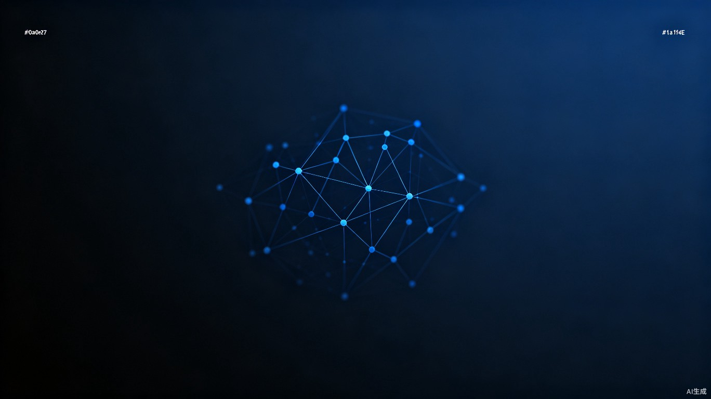

1. 创意名称与介绍
墨脉 MoMai 是一款面向学习、科研与创作场景的现代轻量级笔记系统，旨在解决现有工具割裂严重、数据分散、本土体验不足的问题。它把 Notion 式块级编辑、Obsidian 式双链图谱和本地化插件生态放进一个 HTML 单文件应用中。

一个为思考而生的知识管理工具
墨脉是一款面向学习、编程与创作的本地优先知识库系统。它将传统笔记的线性组织方式升级为基于标签的可视化知识图谱，帮助你在信息碎片间发现隐藏的联系。
整个系统封装在单个 HTML 文件中，无需安装、无需注册、无需服务器 —— 下载即用，数据全部保存在你的本地浏览器中。
八大模块，覆盖知识管理的完整链路
类 Notion 的块编辑体验，支持标题、段落、列表、代码块等多种内容类型，拖拽即可调整结构。
基于 D3.js 的力导向网络图，笔记之间的引用关系自动生成可视化连接，知识脉络一目了然。
宏观概览与精细筛选两层标签体系，通过颜色和大小直观展现知识分布与关联密度。
开放式沙箱架构，支持番茄钟、白噪音、主题皮肤等扩展插件，按需加载，持续丰富工作流。
支持 1/2/3/4 栏自由分屏布局，多文档对照编辑，大幅提升信息对比与整合效率。
数据全部保存在浏览器本地，采用加密存储机制，无需网络连接，隐私安全有保障。
从桌面到移动端的全设备适配，自动调整布局与交互，随时随地保持高效创作。
内置中国风烟雨江南皮肤，水墨色调与古典意境，为知识管理增添文化底蕴。
前沿技术驱动，极致轻量体验
采用 D3.js 力导向布局算法，将笔记间的双链关系转化为直观的网络图。节点大小反映内容权重，连线粗细表示关联强度，支持拖拽、缩放与筛选交互。
图谱自动更新，每新增一条笔记或关联，网络拓扑实时重构，帮助你发现知识之间的隐性联系。
整个应用封装在一个 HTML 文件中，CSS、JS、HTML 合为一体。无需 Node.js、无需构建工具、无需数据库 —— 任何现代浏览器打开即可使用。
极致轻量的同时不妥协功能，适合随身携带、离线使用、快速分享。
自主研发的标签关联算法，自动分析笔记内容，提取关键词并建立标签间的语义关系。标签不仅用于分类，更构成知识网络的核心节点。
通过宏观标签云鸟瞰知识版图，再深入到精细标签层级精准定位，实现从全局到细节的无缝切换。
开放式沙箱架构，持续扩展你的工作流
内置番茄工作法计时器，专注创作，科学管理时间
雨声、海浪、咖啡馆等环境音，营造沉浸式创作氛围
水墨色调与古典意境，中国风视觉主题
仿宣纸质感，简约素雅，适合长文阅读
一键转换为微信公众号排版格式，高效发布
开放 API 与开发文档，自定义你的专属插件
无论你是谁，墨脉都能成为你的知识搭档
面对海量课程与阅读材料，墨脉帮助你用标签构建学科知识树。每一条笔记都通过双链与其他内容关联，形成完整的知识网络。复习时通过图谱快速定位薄弱环节，让学习事半功倍。
支持网格分屏，左侧课件、右侧笔记同时呈现，无需频繁切换窗口。配合番茄钟插件，还能科学管理学习节奏。
开发者日常积累大量代码片段、API 文档和问题解决方案。墨脉的块级编辑器原生支持代码块，配合标签系统，你可以按语言、框架、场景快速检索和复用代码。
通过双链图谱，你还能发现不同技术栈之间的关联，构建属于自己的技术知识体系。配合开发者沙箱插件，甚至可以扩展出专属的开发工具链。
科研工作者需要管理大量文献与笔记，墨脉的标签系统可以按研究方向、方法论、时间线等多维度组织文献。图谱视图让你直观看到不同研究之间的引用关系与发展脉络。
支持多栏分屏，同时打开多篇文献笔记进行对比分析。本地加密存储确保你的研究数据安全保密，不会泄露到云端。
创作者需要收集素材、梳理大纲、撰写内容、排版发布。墨脉覆盖完整创作流程：用标签管理灵感素材，用双链串联大纲与正文，用分屏实时预览效果。
内置微信排版插件，一键将内容转换为公众号格式。烟雨江南主题为文字增添东方美学，让创作不仅高效，更有格调。
学习工作赛道
融合块级编辑、双链图谱、可视化标签和开放式插件沙箱的本地优先知识库。
墨脉 MoMai 是一款面向学习、科研与创作场景的现代轻量级笔记系统，旨在解决现有工具割裂严重、数据分散、本土体验不足的问题。它把 Notion 式块级编辑、Obsidian 式双链图谱和本地化插件生态放进一个 HTML 单文件应用中。
面向高校学生、科研人员、程序员、网文创作者和重度知识管理爱好者。核心痛点是云端工具加载慢、断网不可用、隐私不可控，以及传统双链工具门槛高、插件生态不够开放。
块级编辑提升记录效率，双链图谱帮助用户发现知识关联，本地存储让数据所有权回到用户手中。开放式插件沙箱可让创作者共享番茄钟、古风皮肤、微信排版和行业模板等扩展。
用户可用同一个关键词标签连接不同笔记。例如前端登录表单和后端登录接口都打上 API 标签，系统会在图谱中把它们连接起来，让用户看到跨模块知识之间的关系。
浏览器完全可以实现双链图谱。小规模知识库可用 D3.js + SVG 流畅渲染；笔记增多后可切换 Canvas，并通过局部图谱只展示当前笔记 1-2 层关联节点，避免全库同时渲染造成卡顿。
点击标签即可筛选笔记，右侧图谱会展示这些笔记之间因共同标签产生的连接。
{{ notePreviewText(note) }}
当前处于写作心流专注中。完成后自动触发 Web Audio 空灵颂钵磬音。
基于原生 Web Audio API 纯合成合成器音效，免流体验江南细雨与晨钟梵音。
把现代冷冰的白底替换成古典徽派宣纸色与雨过天晴黛绿，护眼防疲劳。
一键提取块笔记转换为精美微信公众平台格式，直接复制粘贴无需二次排版。
在右侧插件区挂载一个优雅的25分钟倒计时小部件，帮助创作者进入高能写作状态。
激活白噪音控制面板，播放和风雨声，让你一秒落子江南幽静山院中写作。
当前处于写作心流专注中。完成后自动触发 Web Audio 空灵颂钵磬音。
基于原生 Web Audio API 纯合成合成器音效，免流体验江南细雨与晨钟梵音。
把现代冷冰的白底替换成古典徽派宣纸色与雨过天晴黛绿，护眼防疲劳。
一键提取块笔记转换为精美微信公众平台格式，直接复制粘贴无需二次排版。
在右侧插件区挂载一个优雅的25分钟倒计时小部件，帮助创作者进入高能写作状态。
激活白噪音控制面板，播放和风雨声，让你一秒落子江南幽静山院中写作。